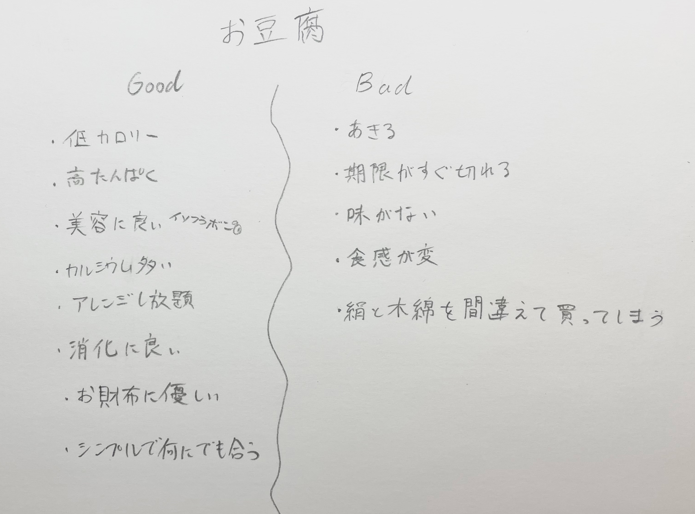
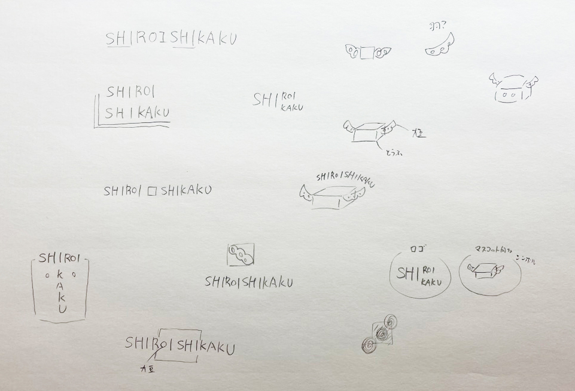
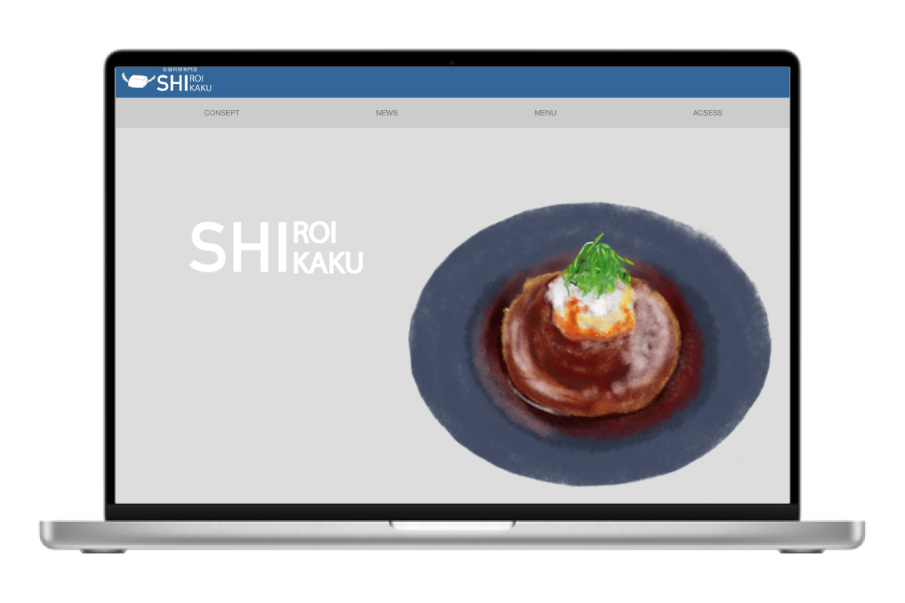

制作期間
2ヶ月
使用ソフト・技術
Illustrator/Photoshop/HTML/CSS
制作過程
01.リサーチ・制作内容を決める
近年健康志向が高まっているため、ダイエットでも有名な豆腐を専門とした飲食店に決めました。 豆腐の良いところと悪いところを書き出し、豆腐について情報を収集しました。 豆腐料理を食べて健康になってほしいという思いを込めて、「優しい食で毎日を健やかに。」をコンセプトに決定しました。 店名の由来は豆腐の特徴である白と四角を合わせて「SHIROISHIKAKU」です。 ちなみに店名候補には「TOFOOD(トーフード)」・「シロイキッチン」がありました。
02.ロゴを作る
コンセプトと内容を照らし合わせながら、ロゴを制作しました。 店名のSHIROISHIKAKUの「SHI」が被っていたため、SHIを大きくし、見やすいようにまとめて工夫をしました。 豆腐の原材料でもある大豆が羽のように見えたため、豆腐に大豆の羽を生やしてふわふわと飛んでいるようなロゴにしました。 このロゴには健康で美味しい豆腐を食べて心も体も軽くなるという意味が込められています。
03.ツールを作る
ポスター・DM・ショップカード・エプロン・テイクアウト用のコップ・紙袋をデザインしました。 お店のイメージカラーの青を基調とし、デザインして統一感を演出しました。
04.WEBデザイン・コーディングをする
HTML・CSSを使ってホームページを作りました。ニュース欄はスクロールして見えるように工夫しました。 シンプルで見やすいように気をつけました。

まとめ
初めてHTMLとCSSを使ってweb作りに挑戦してみてわからないことも多い中、 形にできて良かったです。時間があればもっとボリュームのあるwebを作りたいと思いました。 また、一からブランディングをしてみて、ただ好きなものを作るのではなく 時代にあったお店作りの大切さやコンセプトの重要さを知りました。 これからはお店を利用する際にそのお店のコンセプトなどを考えてみようと思いました。